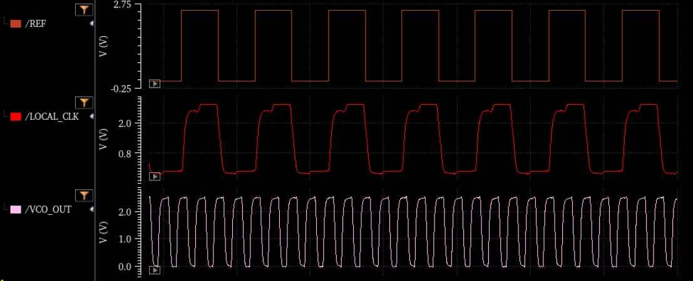

GAL BEN-ITZHAK
Electrical Engineer
Welcome to my website!
I am a first-year Electrical Engineering Ph.D. student
at the University of California, Irvine (UCI), where I have also
completed my B.S. in Electrical Engineering
Summa Cum Laude with a double specialization in Digital
Signal Processing & Communications.
I am currently interning at NASA Jet Propulsion Laboratory as an
Electronics Hardware Engineer for the Suborbital Radar
Science and Engineering Group.
I am confident in my capability to contribute in a wide range of fields due to my experiences and knowledge, coupled with my
quick learning and adaptability traits. You can read about some of my skills and achievements below.
Internship Experiences
+ Electronics Hardware Engineering Intern - NASA Jet Propulsion Laboratory
 • Designed the power distribution board of the DGPS system for the UAVSAR using Altium.
Drew the schematics, designed component footprints and pinouts, and designed the PCB layout and stackup.
Tested and debugged the PCB to confirm it performs its functions accurately.
• Designed the power distribution board of the DGPS system for the UAVSAR using Altium.
Drew the schematics, designed component footprints and pinouts, and designed the PCB layout and stackup.
Tested and debugged the PCB to confirm it performs its functions accurately.
• Designed cable drawings to interface between the various DGPS components and the power board, making sure they all fit in a fixed enclosure.
• Soldered different cables to increase cable length and match between different connectors.
• Maintained corner reflectors.
 • Designed an RF distribution system, oscillator clock distribution, and a PPS fanout buffer board.
• Designed an RF distribution system, oscillator clock distribution, and a PPS fanout buffer board.
• Processed GPS and INU data using MATLAB procedures.
+ RF Applications Engineering Intern - Menlo Micro
• Performed Ron, rise/fall time, S-parameter characterization, Coff, and power tests for RF switches.
• Tested the turn-off input voltage bias of RF switches over cycles.
• Developed a software to automate IP3 testing using a PIM testing device.
Programmed in C to interface between the testing instrument and the RF switch and have
the computer control both via USB connections. Then, I created a GUI to control the
software using C++ to make it more user-friendly to the other testers, including saving states and data.
Generalized this software for multiple RF switches.
• Using the above software, I tested RF switches over cycles
to see the differences in IP3 over their entire lifetimes.
• Characterized multiple revisions of the MM5620 switches to plot their S-parameters, compared them,
and provided my analysis to the rest of the engineers.
• For many of my tests, I generated plots and created presentations that
provided my insights on the data and summarized their statistics, to present the results clearly to the rest of the
team and customers.
• Calibrated and maintained equipment, such as PIM testers, VNAs, power supplies, LCR meters, and RF hot-switching test devices.
+ Electrical Engineering Intern - Aloe Semiconductor
• Designed and simulated PCB traces and vias using ADS to maximize signal integrity.
• Created a transimpedance amplifier using LTSpice.
• Designed IBIS-AMI models for our circuits using SystemVue.
• Helped with the implementation of sampling, filtering, and power measurements of signals using an FPGA board, and compared these results with those of a block diagram that I designed using Simulink.
Research
+ Wave-Controlled Metasurface-Based Reconfigurable Intelligent Surfaces
• Future publications will be posted here!
+ SMAC-FIRE
• Led a group of 5 engineering students with this topic as our senior project.
• SMAC-FIRE (Closed-Loop Sensing, Modeling, and Communications for WildFIRE) is an NSF-funded research project
focused on the construction of a network of airborne drones and wireless sensors that can map wildfires and predict
their spread, and thus support on-ground firefighters.
• In our senior project, we used drones as relay stations to forward messages and media between each other, and thus increase the area of coverage of
the entire system, instead of having all the drones communicate only with a ground station.
For the proof of concept, we connected a Raspberry PI to each drone and attached Wi-Fi dongles to them to establish communication between the different drones.
We verified that we can send commands from one Raspberry PI to another and control the drone using the MAVLink Protocol.
• While working on this project, I was also interested in optimization of the communication system and using the least amount of power necessary to process and transmit the drone
images to determine where wildfires are present.
• Since most cameras already perform the conversion of the raw image to a compressed format (for example, JPEG), it would require a lot of computational power to decompress and
process each image to figure out its importance, in terms of whether it contains information about the wildfire or not, and based on that, decide if the drone should transmit the data.
• Therefore, I worked on an algorithm in C++ to process the JPEG image data in the compressed domain and use binary classification to decide whether the picture contains wildfire information or not.
• I used a simple case to create a Support Vector Machine (SVM) to classify between images that have more red content vs. blue content. That way, there was no need to decompress the images, and just use their
DC (average) chromaticity values from the Discrete Cosine Transform data.
To create the decision boundary, I first extracted the average red and blue chromaticities of the images using MATLAB, and then trained the SVM
based on these extracted values using Python, and plotted them for visualization.
You can read more about our project in our Final Poster.
Projects
+ Digital Phase-Locked Loop
The Digital Phase-Locked Loop (DPLL) was the final project in a graduate course that I took about VLSI.
I was required to design the DPLL using Cadence to create both the overall schematic and the layout of the CMOS-based components.
The purpose of the circuit is to align the frequency and phase of a local clock with those of an input reference clock.
The system has a local Voltage-Controlled Oscillator (VCO) operating at around 1.3 GHz using a closed loop of an odd number of CMOS inverters
with their current flow controlled by the voltage biasing of an NMOS device connected to the source of the bottom NMOS of each inverter.
Then, that VCO signal gets passed through an array of frequency divider circuits to provide limitation to the frequency of the VCO so it can
better align with the reference square-wave frequency. Both the reference clock and the output of the frequency-divider are the inputs to
a Phase-Frequency Detector that responds to the differences in the input signal levels. It outputs those differences to a Charge Pump, followed
by a lowpass filter to control the biasing of the VCO without abrupt changes, and finally aligns the frequency and phase of the VCO with the input ones.
The NMOS and PMOS devices were required to be scaled accurately by keeping their W/L ratios optimal for the function of each circuit element they are in. For example,
the (W/Lp / W/Ln) ratio for the VCO inverters was close to 2.4 to have more symmetry in the rise and fall times of the CMOS inverters.
The example schematic and layout below are those of the VCO.
After many hours of refining the layouts of each component, tuning the bandwidth of the lowpass filter, and passing Design Rule Checks
to correctly map between schematics and layouts, I got my DPLL to successfully lock frequencies in the range 12.5 MHz - 250 MHz.
The figures below display the VCO control voltage, reference clock input, DPLL output, and VCO output at 250 MHz input.

+ Adaptive Noise Cancellation
The adaptive noise canceller takes two inputs - the original signal (primary input), and noise (reference). The reference signal goes through an adjustable filter and gets subtracted from the original signal to try and cancel out only the noise component. The error signal is then supposed to be the output sound with a lower noise component (or none, ideally). The error signal is then passed to the adaptive algorithm that tries to match the reference noise with the noise component of the original signal. Two methods were used to achieve this:
Least Squares Adaptive Filtering: Minimize the squared error of the signal over some time interval and update the filter using the resulting correlation matrices. This method should converge faster, but it requires complicated matrix inversion calculations that take time for the device to process.
Least Mean Squares Adaptive Filtering: Adjust the filter according to the error that it produces multiplied by a small number (step size) to gradually converge towards the optimum. This is similar to the gradient-based approach, but instead of updating the filter using the gradient of the produced squared error, it just uses the error signal, thereby requiring less calculations, but resulting in much slower convergence.
By experimenting with the LMS filter parameters, I attempted to reach faster convergence and have less noise in the produced error sound.
As an example, I had a voice file with a strong background jet engine noise (that has been passed through a certain filter), and another file with similar jet engine noise. The task was to try and match the adaptive filter with the filter that the noise was passed through.
After designing the two adaptive filters, I compared their performances by listening to them and plotting the resulting error signals to see which one matches the original voice signal the most.
The plot on the left shows the three signals (Original in yellow, Least Squares in red, and LMS in blue, step size 0.00005), and the plot on the right shows the LMS signal using different step sizes.
The Least Squares algorithm converged almost right away, but took much longer computation time. The LMS algorithm converged very slowly, depending on the step size. However, increasing the step size beyond a certain threshold caused the filter's response to diverge and the noise to amplify by magnitudes. This taught me about the tradeoff between using more computation time and resources to optimize the filter using less samples, versus using less computation resources but risking slow convergence, or none at all.